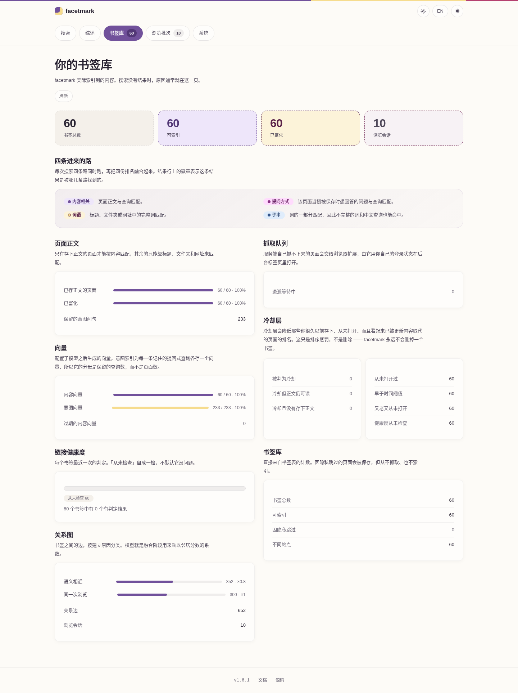
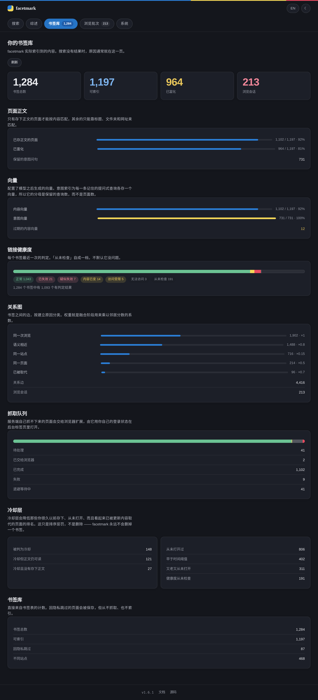

01装上它
你需要 Python 3.10 或更新的版本，Windows、macOS、Linux 都行。用 python --version 看一下；如果打出来是 3.9 或者直接报错，先去 python.org 装 Python。
pip install facetmark安装就这些。没有另外要跑的服务端，没有要建的数据库，也没有要注册的账号。确认一下装好了：
facetmark --versionpip 把它装到了不在 PATH 上的地方。python -m facetmark --version 无论如何都能跑，本页每一条命令都可以这么写。
02把书签导进来
Chrome、Edge、Brave、Vivaldi、Chromium、Opera 都不用你导出任何东西。先关掉浏览器 —— 它占着那个文件 —— 然后：
facetmark import它会自己找到浏览器配置目录，读书签文件，然后打印读进来多少条。Firefox 和 Safari 不属于这一家，这两个要先一次性导出成 HTML（怎么导），再把路径给它：
facetmark import ~/Downloads/bookmarks.html导入是单向读：打开文件、读、关上。facetmark 不写浏览器的配置目录，你在这里做的任何事都改不了、也删不掉你已有的书签。
03给它接一个模型 —— 或者跳过这步
“按意思搜”需要一个能把文字变成数字的东西。拿到它有三条路，第三条是干脆不要。
用在线 API
任何 OpenAI 兼容的接口都行。写进 ~/.facetmark/.env —— 这个文件第一次运行时会自动建好：
FACETMARK_API_BASE=https://api.openai.com/v1
FACETMARK_API_KEY=sk-your-keybase URL 必须以 /v1 结尾。少了它，每次模型调用都返回 404，而错误是以“供应商报错”的形式冒出来的，看着就像 key 不对。
用你自己机器上的模型
不用 key，除了抓取网页本身，没有任何东西离开这台机器：
FACETMARK_EMBED_BACKEND=local第一次跑的时候会下载一个不大的 sentence-transformers 模型。
两个都不要
这一步整个跳过，你仍然有对标题、文件夹和网址的关键词搜索，外加会话图 —— 也就是你哪些书签是同一次上网时存的。失去的是按意思搜。以后随时可以补上模型再跑一遍下一步；没有什么要重来。
04建索引
这是慢的那一步，也是唯一慢的一步。它会去抓每个页面、抽出正文、如果你配了对话模型就顺手做个摘要、做向量，再算出哪些书签是一起存的。
facetmark index花的时间主要在抓取上，不在模型上：facetmark 遵守 robots.txt，并且按站点给自己限速，这是故意的。几千条书签是一杯咖啡的事，不是一秒钟的事。赶时间，或者只想先看它能不能跑：
facetmark index --no-fetch这样只对标题建索引，几秒钟就完。之后再正经跑一次 facetmark index —— 它是幂等的，只会捡起还没做的那部分，已经做过的全部跳过。
进度是边跑边写的。用 Ctrl+C 打断，最多丢掉正在抓的那一个页面，重新跑是接着做，不是从头来。
05打开页面
facetmark serve它会把地址打出来。把第二行那个在浏览器里打开：
facetmark 1.6.1 http://127.0.0.1:8787
open the search page: http://127.0.0.1:8787/app界面就这些。用你平时说话的方式打一个问题进去 —— 你不用记得标题，也不用把词儿说准。

第二个视图回答的是所有人到这一步都会有的那个问题 —— 刚才那些到底成没成？点顶栏的书签库。


facetmark index 还没跑完。如果书签是 0，那是导入没成。facetmark serve 是个前台进程；它开着页面才能用。它监听 127.0.0.1，也就是只有你这台机器，网络上别的机器碰不到。浏览器扩展、API 和 MCP 客户端说话的都是这同一个进程 —— 见使用指南。
06读懂一条结果
每一行都会说它为什么在这儿。在页面里把鼠标放到标记上就有解释；这里是同一件事的一张表。
| 行上的标记 | 意思 |
|---|---|
| 内容相关 | 页面自己的正文命中了 —— 按意思，不是按关键词。想不起来用词的那种页面，就是靠这个找出来的。 |
| 词语 | 标题、文件夹或网址里有一个完整的词命中了。 |
| 子串 | 词的一部分命中了 —— 中文查询和只打了一半的词能用，就是因为它。 |
| 提问方式 | 当初为这个页面留下的某个问题命中了。 |
| 已冷却 | 很久以前存的，一直没打开过，而且有更新的东西看起来把它取代了。往下压，绝不删除。 |
排好序的列表下面，有时会有单独的第二组，标着当时前后一起存的。那些不是你这个查询的答案 —— 它们是你和上面某条结果同一次上网时存下的页面，而这往往才是你真正记得某个页面在哪儿的方式。它们被故意隔开，绝不混进排名。
底部的加载更多取的是同一次排名的下一页，而不是重新搜一遍，所以你已经读过的顺序不会在脚底下重排。列表上方的计数告诉你现在看的是哪一段。
07不对劲的时候
页面问我要令牌
你不是通过 127.0.0.1 访问它的 —— 局域网地址、主机名、反向代理，在那个检查看来都是一回事。跑一下 facetmark token，把值粘进那个输入框一次，浏览器就记住了。这个检查为什么存在。
页面根本打不开
facetmark serve 得一直在某个终端里跑着。如果它带着 address already in use 退出了，说明 8787 被别的东西占了：跑 facetmark serve --port 8788，然后打开那个端口。
搜不到东西，或者只能搜到一模一样的词
打开书签库。内容向量是 0，说明按意思搜没开起来：没配模型，或者 facetmark index 没跑完。抓取队列不空，说明还在处理你的书签库，结果会继续变好。
每次模型调用都返回 404
base URL 少了 /v1。这是遥遥领先的第一大故障原因。
我的数据在哪儿
一个目录：macOS 和 Linux 上是 ~/.facetmark，Windows 上是 %USERPROFILE%\.facetmark。里面是一个 SQLite 文件加一个配对令牌。搬走、备份、拷到另一台机器 —— 这就是全部状态。FACETMARK_DATA_DIR 可以把它放到别处。
怎么把它全部删掉
删掉那个目录。没有卸载步骤，外面也没有别的东西 —— 没有注册表项，没有改过浏览器，哪儿也没有账号。pip uninstall facetmark 删掉程序本身。
别的问题
facetmark stats 会打印索引里到底有什么，大部分困惑看一眼就清楚了，使用指南里有更长的排错清单。再不行，就去 提个 issue。